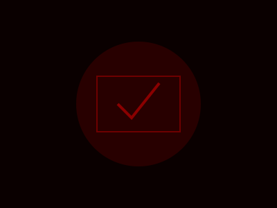

Blogs › Caso curioso #2

Cómo armar un maratón de terror gamer
Un buen maratón de terror no se trata solo de encadenar partidas: el ritmo, el ambiente y hasta el orden de los juegos definen si la experiencia se siente memorable o simplemente agotadora. Estos son los puntos que marcan la diferencia.
Cuida el ritmo de los sustos: abrir la noche con el juego más intenso agota la tensión rápido. Empieza con algo de atmósfera lenta y deja los sobresaltos más fuertes para el final.
Apaga las luces, pero no todas: la oscuridad total dificulta ver los controles y rompe la inmersión cuando tienes que prender la luz a medio susto. Una luz tenue e indirecta funciona mejor.
Define paradas de descanso: el terror sostenido cansa la atención. Cortes cada 40-50 minutos ayudan a que el miedo siga funcionando en vez de volverse ruido de fondo.
Cuidado con el volumen: gran parte del terror vive en el audio. Súbelo más de lo habitual, pero deja auriculares a mano si hay vecinos o gente durmiendo cerca.
Con estos ajustes, hasta una sesión larga se siente controlada, aunque el objetivo siga siendo perder el control por un rato.